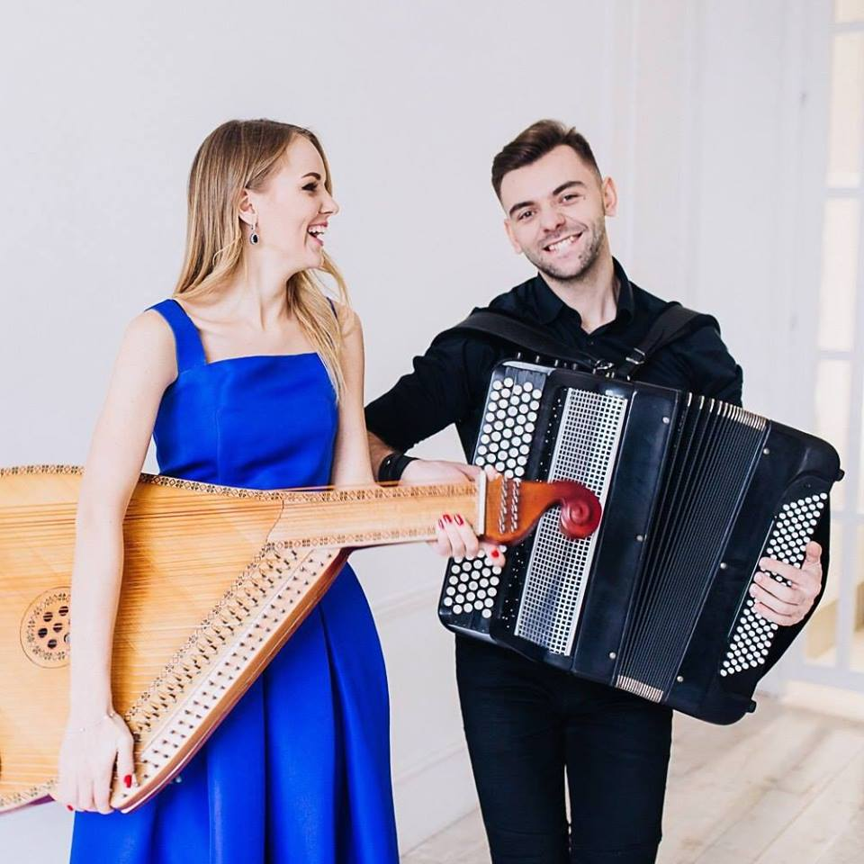

Історія

Національній музичній академії України , де вони навчаються. Гурт популярний як в Україні, так і за її межами. Відвідував з сольними концертами Катар , Амстердам , Берлін, а також представив Україну на міжнародному форумі в Давосі . В інтернеті відеогрупа переглянула понад 25 мільйонів користувачів, зокрема на YouTube і Facebook. Перші відеокліпи, які були залишені в мережі в 2015 році, зібрали понад 1 мільйон переглядів на YouTube протягом перших 10 днів і стали найпопулярнішим відео за участю бандури, а Тетяна Мазур стала найкращою бандуристкою року за версією фестивалю «Країна мрій». У листопаді 2016 року перегляди на YouTube перевищили 3 млн., А перша авторська композиція «Міф» зайняла перше місце на платформі «Тройер», а також потрапила до «ТОП-7» нових українських треків, які варто послухати. 2016 року брали участь у благодійному фестивалі «З країни в Україну», під час якого відвідали зону АТО і зіграли кілька концертів для наших солдатів. Також у 2016 році відвідали з концертами країни Європи та Азії.